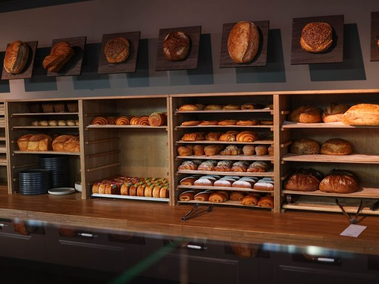
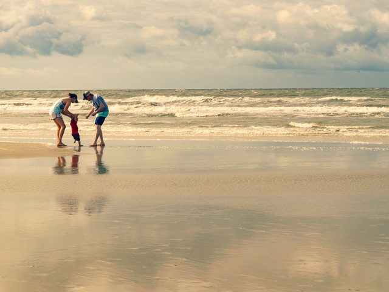
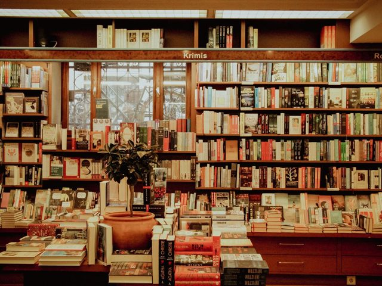
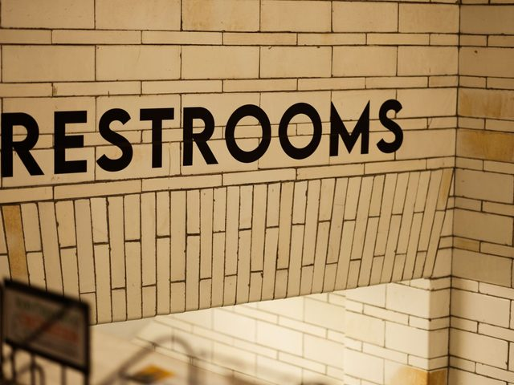
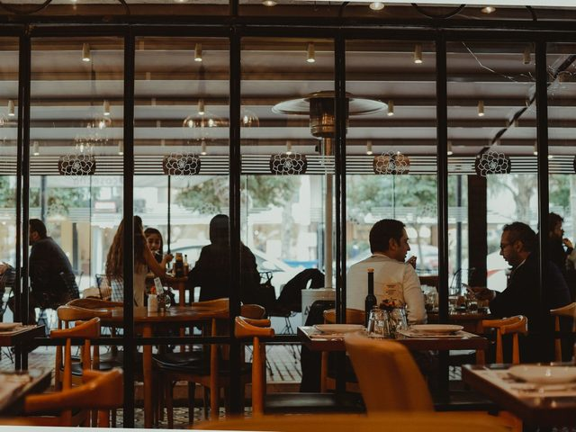
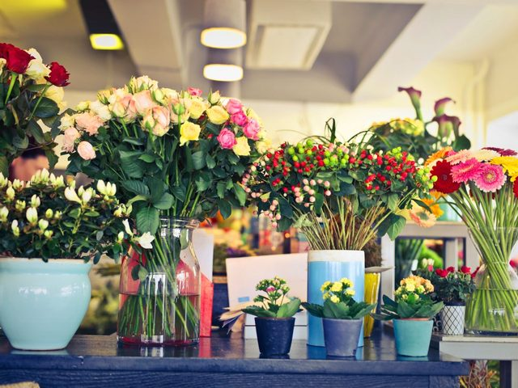

UNIT 17 · VOCABULARY
地點與位置
Places & locations
41 個單字聽・唸・用
本單元單字一覽
表示位置、方向的字，和城市裡常見的地點，共 41 個字。注意 in front of、in the middle of 的說法，以及問路怎麼說。
heretherebackfrontleftmiddlerighteastwestsouthnorthtopbakerybankbeachbookstorechurchdepartment storefactoryhospitalhotelmarketmuseumofficeparkpoolpost officepolice stationrestroomrestaurantshopstoresupermarkettempletheaterzoocitycountryfarmplacetown
每個字都有 🔊，先聽發音、跟著唸，再看例句。
單字 1–4
📍
here
這裡adv./n.
Come here and look at this!
過來看這個！
過來看這個！
👉
there
那裡adv./n.
We will go there by bus.
我們會搭公車去那裡。
我們會搭公車去那裡。
🔙
back
回原處；後面adv./n.
Please put the book back on the shelf.
請把書放回書架上。
請把書放回書架上。
⬆️
front
前面n./adj.
There is a big tree in front of my house.
我家前面有一棵大樹。
我家前面有一棵大樹。
單字 5–8
⬅️
left
左邊（的）；向左adj./adv./n.
Turn left at the corner.
在轉角左轉。
在轉角左轉。
⏺️
middle
中間n.
The table is in the middle of the room.
桌子在房間的中間。
桌子在房間的中間。
➡️
right
右邊（的）；向右；對的adj./adv./n.
The bank is on your right.
銀行在你的右手邊。
銀行在你的右手邊。

east
東方（的）n./adj.
The sun rises in the east.
太陽從東邊升起。
太陽從東邊升起。
單字 9–12
west
西方（的）n./adj.
The sun sets in the west.
太陽從西邊落下。
太陽從西邊落下。
🧭
south
南方（的）n./adj.
Kaohsiung is in the south of Taiwan.
高雄在台灣南部。
高雄在台灣南部。
🧭
north
北方（的）n./adj.
Taipei is in the north of Taiwan.
台北在台灣北部。
台北在台灣北部。

top
頂部；最高點n.
There is a flag on the top of the building.
大樓的頂端有一面旗子。
大樓的頂端有一面旗子。
單字 13–16

bakery
麵包店n.
The bakery sells fresh bread every morning.
這家麵包店每天早上賣新鮮的麵包。
這家麵包店每天早上賣新鮮的麵包。
bank
銀行n.
Mom went to the bank to get some money.
媽媽去銀行領錢。
媽媽去銀行領錢。

beach
海灘n.
We played in the sand on the beach.
我們在海灘上玩沙。
我們在海灘上玩沙。

bookstore
書店n.
I bought two comic books at the bookstore.
我在書店買了兩本漫畫。
我在書店買了兩本漫畫。
單字 17–20

church
教堂n.
There is an old church in the town.
鎮上有一座古老的教堂。
鎮上有一座古老的教堂。

department store
百貨公司n.
The department store is very crowded on weekends.
週末百貨公司人很多。
週末百貨公司人很多。

factory
工廠n.
My uncle works in a car factory.
我叔叔在汽車工廠工作。
我叔叔在汽車工廠工作。

hospital
醫院n.
Grandpa stayed in the hospital for a week.
爺爺住院住了一個星期。
爺爺住院住了一個星期。
單字 21–24

hotel
飯店；旅館n.
We stayed at a hotel near the beach.
我們住在海灘附近的飯店。
我們住在海灘附近的飯店。

market
市場n.
Mom buys fresh fish at the market.
媽媽在市場買新鮮的魚。
媽媽在市場買新鮮的魚。

museum
博物館n.
We saw old paintings at the museum.
我們在博物館看了古老的畫。
我們在博物館看了古老的畫。

office
辦公室n.
Dad's office is on the tenth floor.
爸爸的辦公室在十樓。
爸爸的辦公室在十樓。
單字 25–28

park
公園；停車n./v.
Let's play badminton in the park.
我們去公園打羽毛球吧。
我們去公園打羽毛球吧。

pool
游泳池n.
The kids are swimming in the pool.
孩子們在游泳池裡游泳。
孩子們在游泳池裡游泳。

post office
郵局n.
I mailed a letter at the post office.
我在郵局寄了一封信。
我在郵局寄了一封信。

police station
警察局n.
He took the lost wallet to the police station.
他把撿到的錢包送到警察局。
他把撿到的錢包送到警察局。
單字 29–32

restroom
洗手間；廁所n.
Excuse me. Where is the restroom?
不好意思，請問洗手間在哪裡？
不好意思，請問洗手間在哪裡？

restaurant
餐廳n.
Let's have dinner at a Japanese restaurant.
我們去日本餐廳吃晚餐吧。
我們去日本餐廳吃晚餐吧。

shop
商店；購物n./v.
There is a flower shop next to my school.
我學校旁邊有一家花店。
我學校旁邊有一家花店。

store
店；商店n.
The store opens at ten in the morning.
這家店早上十點開門。
這家店早上十點開門。
單字 33–36

supermarket
超級市場n.
We buy milk and eggs at the supermarket.
我們在超市買牛奶和蛋。
我們在超市買牛奶和蛋。

temple
寺廟；神殿n.
Many people visit the temple at Chinese New Year.
過年時很多人去廟裡拜拜。
過年時很多人去廟裡拜拜。

theater
劇院；戲院n.
We watched a play at the theater.
我們在劇院看了一齣戲。
我們在劇院看了一齣戲。
zoo
動物園n.
We saw pandas at the zoo.
我們在動物園看到了熊貓。
我們在動物園看到了熊貓。
單字 37–40

city
城市n.
Taipei is a big city.
台北是一個大城市。
台北是一個大城市。

country
國家；鄉下n.
Japan is a beautiful country.
日本是一個美麗的國家。
日本是一個美麗的國家。

farm
農場n.
There are cows and pigs on the farm.
農場上有牛和豬。
農場上有牛和豬。
📌
place
地方；場所n.
This is a nice place for a picnic.
這裡是野餐的好地方。
這裡是野餐的好地方。
單字 41–41

town
城鎮；小鎮n.
My grandparents live in a small town.
我的祖父母住在一個小鎮。
我的祖父母住在一個小鎮。
說位置的片語
| 片語 | 中文 | 例句 |
|---|---|---|
| in front of | 在…前面 | The bus stop is in front of the bank. |
| at the back of | 在…後面 | The pool is at the back of the hotel. |
| in the middle of | 在…中間 | The park is in the middle of the city. |
| on the left / on the right | 在左邊／在右邊 | The zoo is on the left. |
| on (the) top of | 在…上面 | There is a cat on top of the car. |
| next to | 在…旁邊 | The bakery is next to the bookstore. |
here、there 前面不加介系詞：Come here.（不說 come to here）
東西南北
| 英文 | 中文 | 例句 |
|---|---|---|
| north | 北 | Taipei is in the north of Taiwan. |
| south | 南 | Kaohsiung is in the south of Taiwan. |
| east | 東 | The sun rises in the east. |
| west | 西 | The sun sets in the west. |
中文說「東南西北」，英文習慣說 north, south, east and west；方位前面要加 the。
問路和指路
| 英文 | 中文 |
|---|---|
| Excuse me. Where is the post office? | 不好意思，請問郵局在哪裡？ |
| How can I get to the zoo? | 我要怎麼去動物園？ |
| Go straight and turn left at the corner. | 直走，在轉角左轉。 |
| It's on your right. | 在你的右手邊。 |
| It's across from the hospital. | 在醫院對面。 |
快問快答：中文 → 英文
1這裡here
2回原處；後面back
3左邊（的）；向左left
4右邊（的）；向右；對的right
5西方（的）west
6北方（的）north
7麵包店bakery
8海灘beach
快問快答：英文 → 中文
1church教堂
2factory工廠
3hotel飯店；旅館
4museum博物館
5park公園；停車
6post office郵局
7restroom洗手間；廁所
8shop商店；購物
學完了！接下來
複習方法
review
- 回到「📗 單字卡」，按「遮中文」自己考自己
- 再按「遮英文」，看中文說出英文
- 每個例句跟著 🔊 唸一次
準備好了
- 按右上角「📝 前往測驗」
- 測驗錯的題目要訂正到全對
- 訂正完成補送 1 點